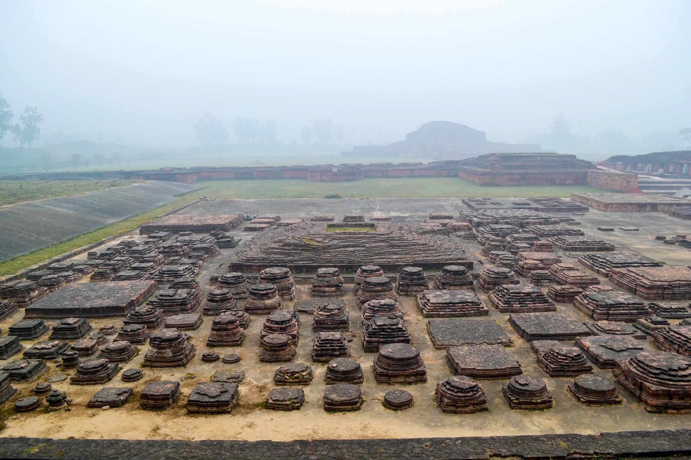

<!DOCTYPE html>
<html lang="en">
<head>
    <meta charset="UTF-8">
    <meta http-equiv="X-UA-Compatible" content="IE=edge">
    <meta name="viewport" content="width=device-width">
    <title>Ruins of Vikramshila</title>
    <script>
        function getPics() {} //just for this demo
        const imgs = document.querySelectorAll('.gallery');
        const fullPage = document.querySelector('#fullpage');
        
        imgs.forEach(img => {
          img.addEventListener('click', function() {
            fullPage.style.backgroundImage = 'url(' + img.src + ')';
            fullPage.style.display = 'block';
          });
        });

        $('img[eng]').addClass('eng').click(function(){
    var src = $(this).attr('src');
    $('<div>').css({
        background: 'RGBA(0,0,0,.5) url('+src+') no-repeat center',
        backgroundSize: 'contain',
        width:'100%', height:'100%',
        position:'fixed',
        zIndex:'10000',
        top:'0', left:'0',
        cursor: 'zoom-out'
    }).click(function(){
        $(this).remove();
    }).appendTo('body');
});
        </script>
</head>
<body>
    
</body>
</html>
<style>
    *{
        margin: 9px 9px;
        font-family: 'Franklin Gothic Medium', 'Arial Narrow', Arial, sans-serif;
    }

   /* Add a black background color to the top navigation bar */
.topnav {
  overflow: hidden;
  background-color: #e9e9e9;
}

/* Style the links inside the navigation bar */
.topnav a {
  float: right;
  display: block;
  color: black;
  text-align: center;
  padding: 14px 16px;
  text-decoration: none;
  font-size: 17px;
}

/* Change the color of links on hover */
.topnav a:hover {
  background-color: #ddd;
  color: black;
}

/* Style the "active" element to highlight the current page */
.topnav a.active {
  background-color: #2196F3;
  color: white;
}

/* Style the search box inside the navigation bar */
.topnav input[type=text] {
  float: right;
  padding: 6px;
  border: none;
  margin-top: 20px;
  margin-right: 16px;
  font-size: 17px;
}

/* When the screen is less than 600px wide, stack the links and the search field vertically instead of horizontally */
@media screen and (max-width: 600px) {
  .topnav a, .topnav input[type=text] {
    float: none;
    display: block;
    text-align: left;
    width: 100%;
    margin: 0;
    padding: 14px;
  }
  .topnav input[type=text] {
    border: 1px solid #ccc;
    
  }
}


#fullpage {
  display: none;
  position: absolute;
  z-index: 9999;
  top: 0;
  left: 0;
  width: 100vw;
  height: 100vh;
  background-size: contain;
  background-repeat: no-repeat no-repeat;
  background-position: center center;
  background-color: black;
}


.headline{
    height: 100px;
    width: 100%;
    font-size: 25px;
}
.image{
    height: 500px;
    width: 100%;
    border: 2px white;
    border-radius: 8px;
    
}
.image ul {
    align-content: baseline;
    
}

.container{
    display: flex;
}
.data{
    overflow: auto;
    height: 400px;
    width: 800px;
    font-size: large;
    /* border: 2px solid black;
    border-radius: 8px; */
}

nav {
    text-align: center;
    background-color: rgb(187, 186, 186);
    color: black;
  position: relative;
  padding-bottom: 12px;
}
nav.line {
  height: 2px;
  position: absolute;
  bottom: 0;
  margin: 10px 0 0 0;
  background: #d10d34;
}
nav ul {
    
  padding: 5px;
  margin: 5px;
  list-style: none;
  display: flex;
}
nav ul li {
  margin: 0 40px 0 0;
  opacity: 1;
  transition: all 0.4s ease;
}
nav ul li:hover {
    color: #d10d34;
  opacity: 2;
}
nav ul li.active {
  opacity: 2;
}
nav ul li:last-child {
  margin-right: 0;
}
nav ul li a {
  text-decoration: none;
  color: #000000;
  text-transform: uppercase;
  display: block;
  font-weight: 600;
  letter-spacing: 0.2em;
  font-size: 14px;
}


/* .gallary{
    height: 400px;
    width: 660px;
    border: 2px solid black;
    border-radius: 8px;
} */
.photo1{
    height: 400px;
    width: 60%;
    /* border: 2px solid black;
    border-radius: 8px; */
    float: right; 
}
/* .short{
    position: absolute;
    top: 1500px;
    height: 400px;
    width: 26%;
    border: 2px solid black;
    border-radius: 8px;

} */
.bg{
    bottom: 0px;
    height: 50px;
    width: 100%;
}

.short1{
    position: absolute;
    /* top: 1500px; */
    /* left: 420px; */
    height: 500px;
    width: 36%;
    border: 2px solid black;
    border-radius: 8px;

}
</style>
<body>
  <nav>
    <ul>
      <li class="active"><a href="\index.html">Home</a></li>
      <li><a href="">About</a></li>
      <li><a href="">Contact Us</a></li>
    </ul>
</nav>
    <div class="address">
        <br>
       <h3>Home/Heritage/Ruins of Vikramshila</h3> 
    </div>
    <br>
    <div class="headline">
        <h1>Ruins Of Vikramshila</h1>
    </div>
    <div class="image">
        
    </div>
    <br><br><br><br><br><br>
    <div class="container"> 
    <div class="data">
     <p>
      As we all know INDIA IS THE CENTER OF KNOWLEDGE AND CULTURE ALL AROUND THE WORLD.The Ancient heritage Situated at Antichak in Kahalgaon sub-division, 38 KM from Bhagalpur, ancient Vikramshila University was famous as a Centre of learning during the Pala dynasty.The university was established by the King Dharmpala.
        <br>
        Have you thought what inspired Dharmpala to establish the university? 
        <br><br>
        These are first, the rocky hillock anchored around the confluence of the Kosi and Ganga rivers at Bateshwar Sthan was not only a scenic attraction but also a popular Tantric site.
        <br><br>
        Second, the Ganga here was Uttar Vahini (flowing northwards) and as such, the place was a pilgrim center which drew large crowds during Varsavardhana.
        <br><br>
        Vikramashila was one of the largest Buddhist universities, with more than one hundred teachers and about one thousand students. The vast majority of the manuscripts contained within Vikramashila’s library have been lost following multiple historical upheavals including the Muslim raids of East India led by Bakhtiyar Khalji. Many of manuscripts fell prey to natural decay as the climate of the Indo-Gangetic plains is not favourable to the preservation of palm-leaf manuscripts.
        <br><br>
        Now a days this become the center of tourism .In 2015, prime minister Narendra Modi announced a Rs 500 crore package for it, while state Government had to provide around 500 acres land which was yet to be done. President Pranab Mukherjee visited the excavated ruins of Vikramshila university in 2017. so if you want to experience the abode of ancient Indian education system you must visit this place.
     </p>
    </div>
    <div class="gallary">
        
        <ul>
            <li>Distance From Bhagalpur: 36 Kms</li>
            <li>Via NH133</li>
        </ul>
        <div id="fullpage" onclick="this.style.display='none';"></div>
    </div>
        </div>
        
        <div class="photo1">
          <div class="mapouter"><div class="gmap_canvas"><iframe class="gmap_iframe" frameborder="0" scrolling="no" marginheight="0" marginwidth="0" src="https://maps.google.com/maps?width=600&amp;height=500&amp;hl=en&amp;q=Ruins Of vikramshila&amp;t=h&amp;z=14&amp;ie=UTF8&amp;iwloc=B&amp;output=embed"></iframe><a href="https://capcuttemplate.org/">Capcut Template</a></div><style>.mapouter{position:relative;text-align:right;width:600px;height:500px;}.gmap_canvas {overflow:hidden;background:none!important;width:97%;height:500px;}.gmap_iframe {width:97%!important;height:500px!important;}</style></div>
        </div>

       <div class="short1">
        
       </div>
       <br><br><br><br><br><br><br><br><br><br><br><br><br><br><br><br><br><br><br><br><br><br><br><br><br><br><br>
       <br><br><br><br><br>
</body>
</html>
